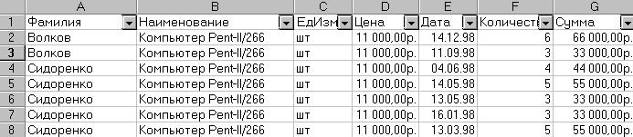
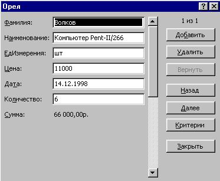

9.6.4 Поиск записей в списке с помощью формы
- Для перемещения на одну запись нажмите на
стрелки полосы прокрутки в диалоговом окне.
Чтобы переместиться на 10 записей, нажмите полосу
прокрутки между стрелками.
- Нажмите кнопку Далее для перехода к
следующей записи списка и Назад — для
перехода к предыдущей.
- Чтобы задать условия поиска или условия
сравнения, нажмите кнопку Критерии . Введите
критерии в форме. Чтобы найти совпадающие с
критериями записи, нажмите кнопки Далее
или Назад. Чтобы вернуться к правке
формы, нажмите кнопку Правка.
Ниже на рисунках приведены: исходный список и
построенная для него форма.

Исходный список

Форма
Назад | Содержание